项目成果展示
48 小时 Game Jam 作品：《伢》在 GGJ 翌光计划（主题 GROW）中完成，以极简手感承载武汉四季的城市记忆。已上线在线试玩，并产出实机演示与一套像素美术与程序化音乐。
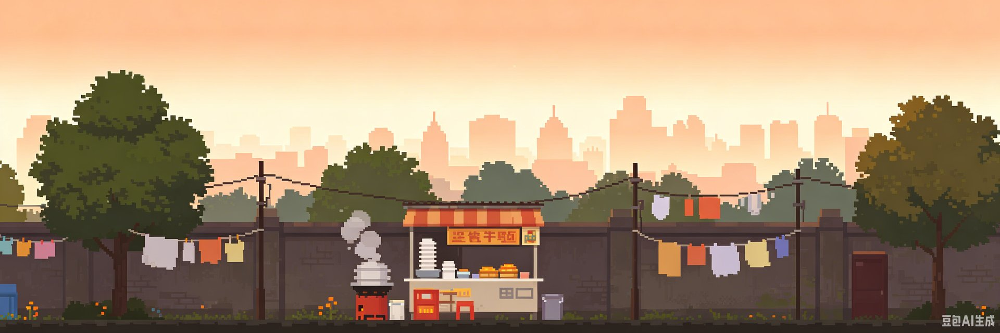
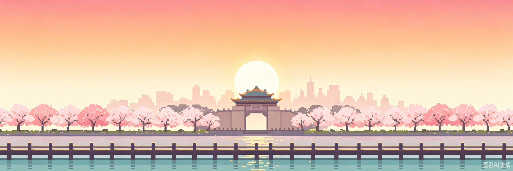
玩法 · HOW TO PLAY
玩法做减法：只有移动与单段跳跃，一击即死，触碰灯笼秒级重生。美术统一 16-bit 低饱和像素风，三层视差与水面倒影；音乐与音效全部由 Web Audio 程序化原创合成。
A / D 移动 · 空格 / W 跳跃
四季章节 · 城市叙事
《伢》不讲宏大的故事，只陪一个武汉伢走完四季——夏的过早与米酒、秋的长江与地铁、冬的封城与樱花、春的东湖与凌波门日出，四季轮转之间，一座城市也在悄悄变迁。每个季节尽头是一张像素宫格印象过场，一句白描，几格意象。
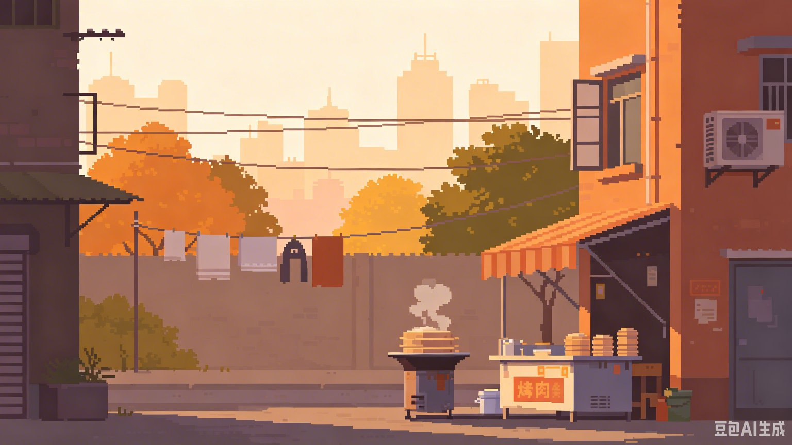
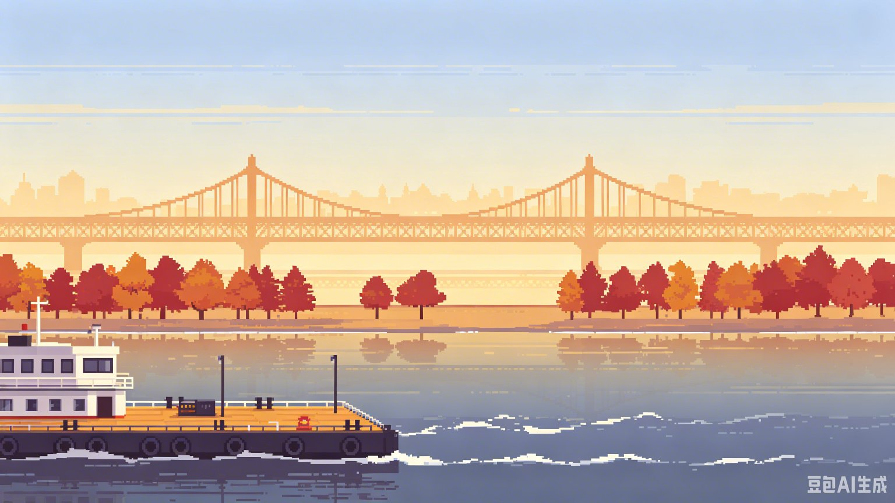
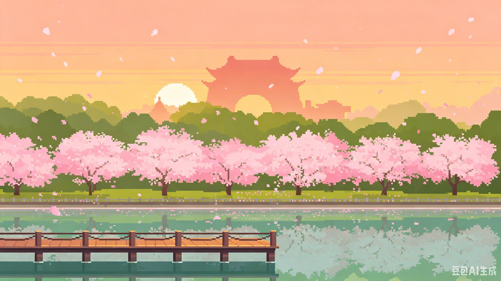
过场 CG · 像素宫格印象
夏 · 米酒 / 热干面 · 出租屋
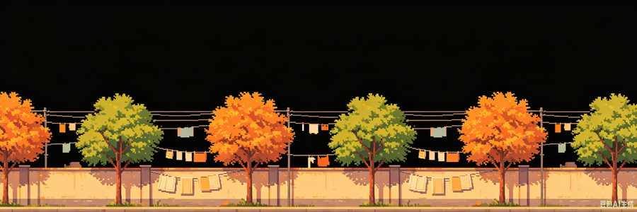
秋 · 长江 / 东湖 · 宝通寺 · 地铁
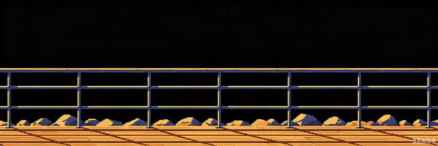
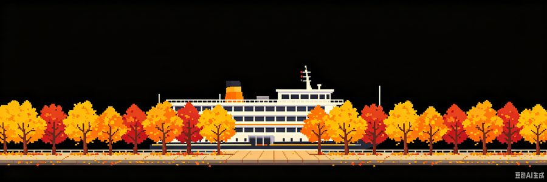
冬 · 樱花 · 武汉大学
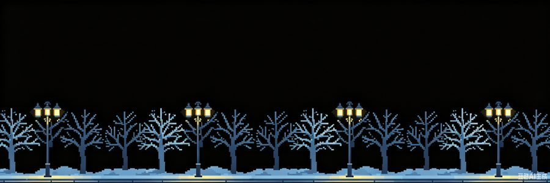
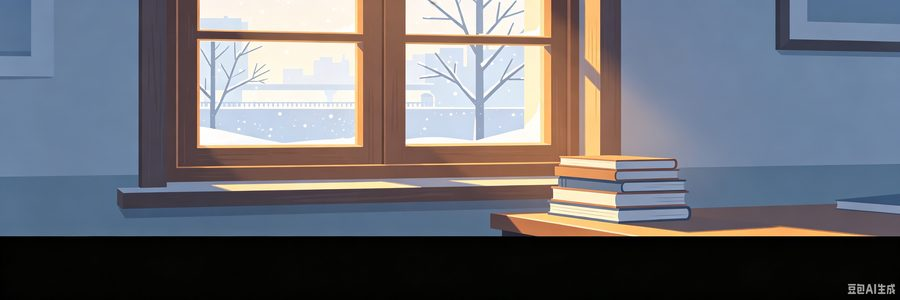
春 · 东湖 · 凌波门 · 日出
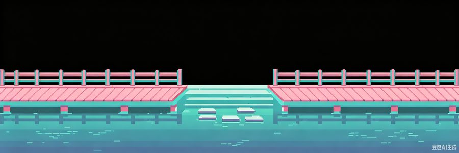
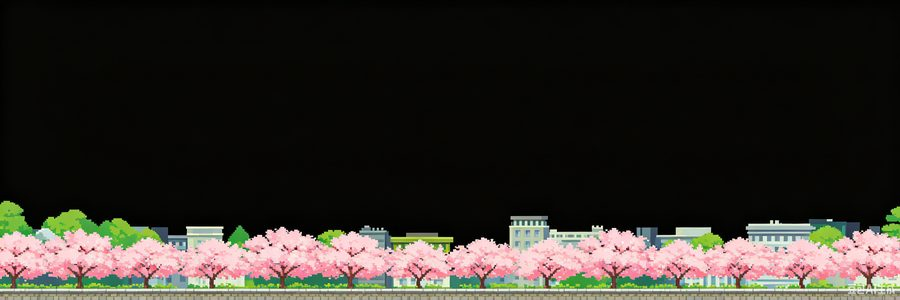
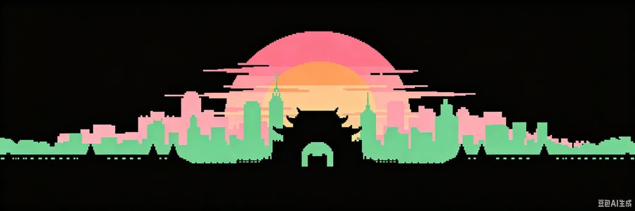
实机演示
实机演示 · 四季闯关
Game Jam 认证
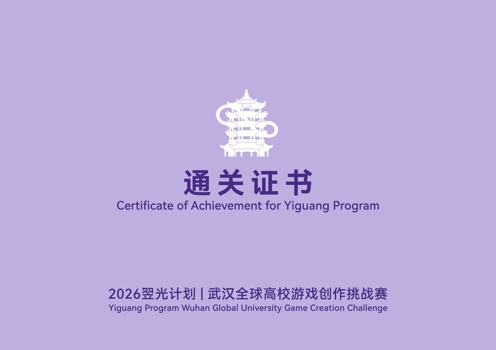
作品信息
- 作品名：伢（Ya）—— 一个武汉伢的四季生长
- 作者：RRRaven（Rayne）· 策划 / 程序 / 美术
- 赛事：GGJ 翌光计划 2026 · THEME: GROW · 48 小时创作挑战
- 技术栈：HTML5 Canvas · Phaser · Web Audio（程序化音乐）
- GGJ 页面：globalgamejam.org/games/2026/ya-4
一、设计概述
作品名伢（Ya）
游戏类型2D 横板跳跃 × 叙事游戏
核心机制单段跳跃 · 一击即死 · 灯笼重生
叙事结构四季章节 + 像素宫格过场 CG
美术风格16-bit 低饱和像素风 · 三层视差
开发周期48 小时（GGJ 2026）
设计意图
- 玩法做减法：只有移动与单段跳跃两种操作，一击即死、触碰灯笼秒级重生，把全部注意力留给"走过一座城市"的体验。
- 四季即叙事：四个章节对应武汉四季的真实记忆——过早的米酒热干面、过江的轮渡、封城的樱花、东湖的日出，用一座城市的变迁承载"生长"主题。
- 宫格过场：每个季节尽头以像素宫格印象做叙事停顿，一句白描、几格意象，克制地完成情感落点。
- 程序化声音：音乐与音效全部由 Web Audio 实时合成，零素材成本下保持统一的低饱和质感。
《伢》以极简的交互与克制的叙事，在 48 小时内完成从概念到可玩版本的完整闭环，是对"生长"主题的一次城市记忆表达。